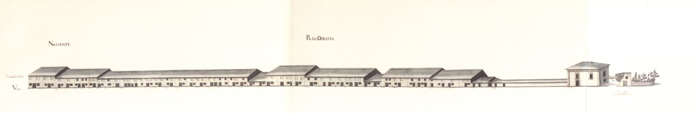

Rua Direita - poente

Rua Direita - nascente
Rua Direita - poente
Rua Direita - nascente
Longa rua, no enfiamento da rua Cruz de Pedra , que se prolongava até ao Monte das Penas , ponto extremo da cidade onde havia uma igreja e que corresponde actualmente ao espaço compreendido entre o largo de Maximinos e a praça do Condestável
Aberta em data que desconhecemos torna-se notável pela ordenação dos seus edifícios, muito singelos, de pedra, com dois pisos, com porta e janela portadas de madeira no.º1 piso e com duas janelas bracarenses no andar superior; as empenas, corridas, estão quase todas ao mesmo nível. No extremo da rua, no Monte das Penas , vê-se uma casa grande, talvez de quinta e, a seu lado, ruínas de outra.
Com 41 casas do lado Nascente e 29 do Poente, nenhuma destas casas, curiosamente, era prazo do Cabido.
Mantém actualmente o mesmo nome.

Rua Direita

Rua Direita
Enfiteuta: -
Foro: -
Descrição: